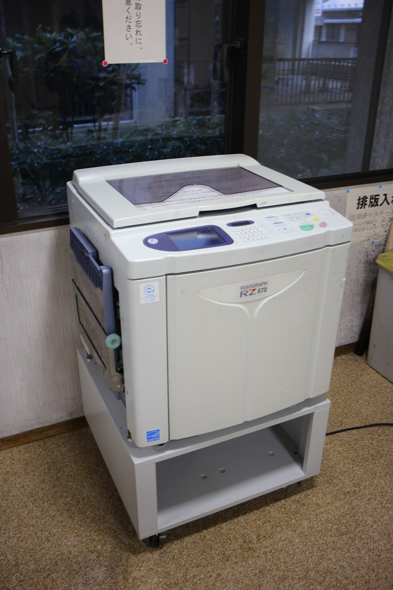

References / Product / 529
Risograph RZ670 duplicator
A Riso Kagaku RZ670 stencil duplicator in a public learning center in Nagoya: the office machine whose drums and stencils give the style its look.
- Source
- Wikimedia Commons: Kita 20211017-117
- Creator
- Riso Kagaku Corporation (manufacturer)
- Made
- Photographed 17 October 2021. The model date was not checked.
- Style
- Risograph (agent-proposed, not yet reviewed by a person)
- Moods
- Utilitarian, office
- Evidence
- Viewed the 1280 × 1920 px Commons thumbnail. The file is in Category:Interiors of Nagoya City Kita Lifelong Learning Center.
- Reviewed
- Rights
- Open license, stored. License: CC-BY-SA-4.0. Rights policy

Context
Wikipedia describes the Risograph as a brand of digital duplicators by Riso Kagaku, introduced in Japan in 1980, which became popular among artists in the 2010s for zines and comics (Wikipedia).
Observed
- A beige office machine on a stand, labeled “RISOGRAPH RZ670” and “RISO”.
- The front cover is closed, so no ink drum is visible. A side paper tray is open.
- A sign behind it, in Japanese, reminds users not to forget their originals.
Why it belongs
The machine is a plain office duplicator. The style comes from its limits: one ink per drum, stencil masters, and imperfect registration between passes.
Borrow
Treat each color as a separate pass that may shift, not as a channel of one image.
Measured
Machine-extracted by tools/image-traits.py on . Full measurement.
- Mean chroma
- 0.06
- Palette
- #79644b 13%
- #131314 13%
- #babab6 12%
- #afaeaa 7%
- #a19d9e 6%
- #363940 5%
- #2b2e34 4%
- #565252 4%

